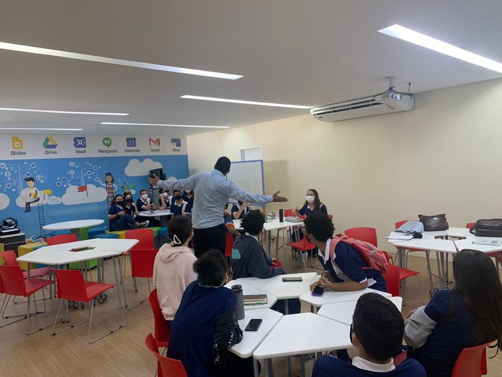

Eletivas Estudantis Do Coesi
As eletivas
asronomia
cesinameiadaia
rpogramaca
cineminha



Com a implementação do Novo Ensino Médio nas escolas, o Coesi organizou
para os alunos um novo método de aprendizagem: As eletivas
O que são as eletivas ?
As eletivas são propostas elaboradas por grupos de ao menos dois
professores de disciplinas distintas. Onde o tema é de livre escolha dos
professores, desde que se trate de um assunto relevante e que seja
abordado de modo a aprofundar os conteúdos da Base Nacional Comum.
Qual a função das eletivas ?
As eletivas servem para aprofundar o conhecimento do aluno, com base na
área escolhida pelo próprio.
Quais são as eletivas propostas pelo Coesi, em 2022 ?
Cineclube, coesi na mídia, programação e astronomia